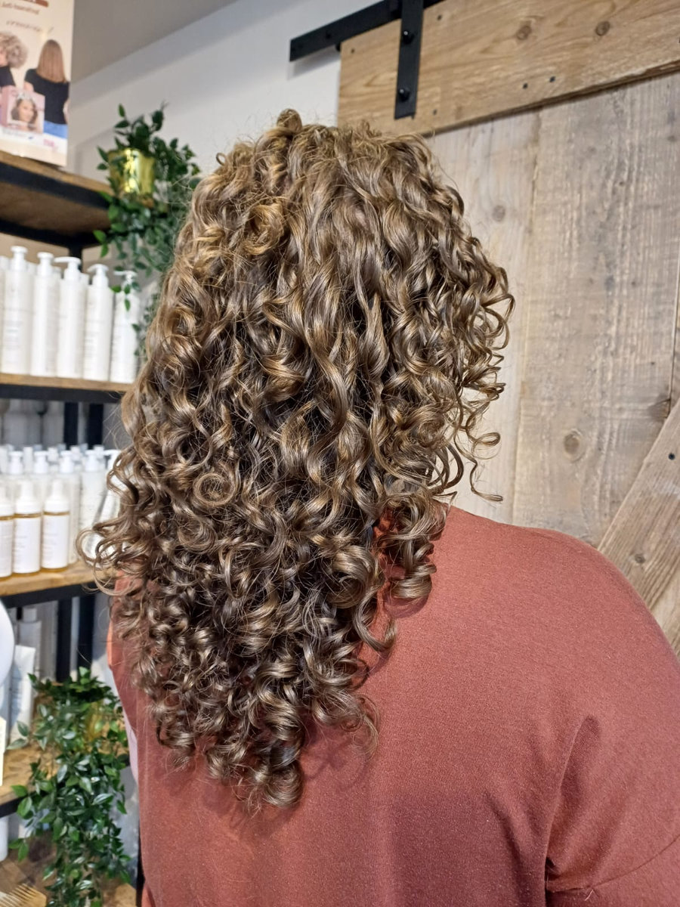
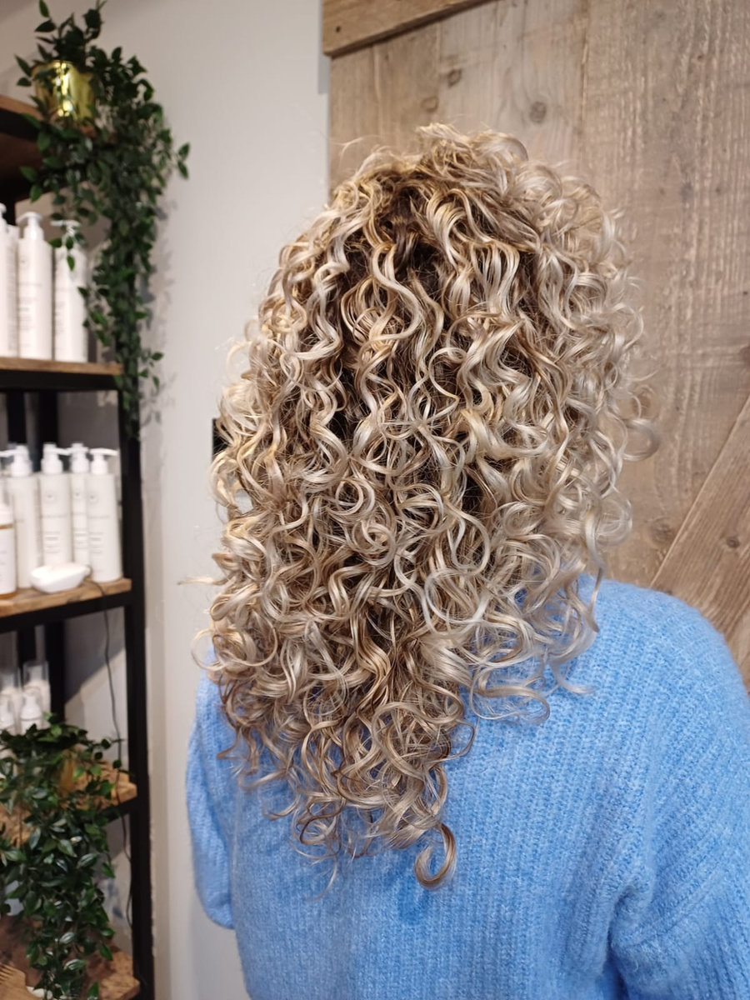
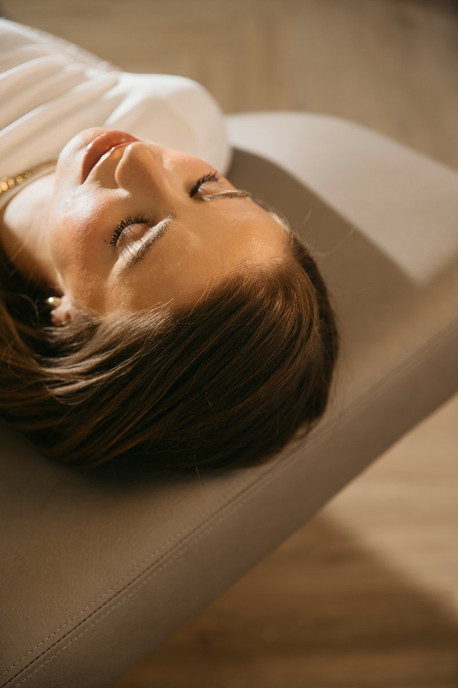
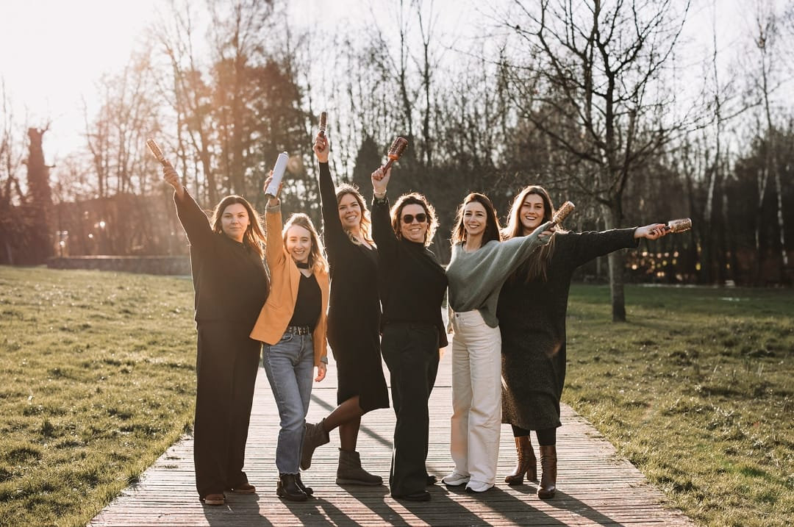
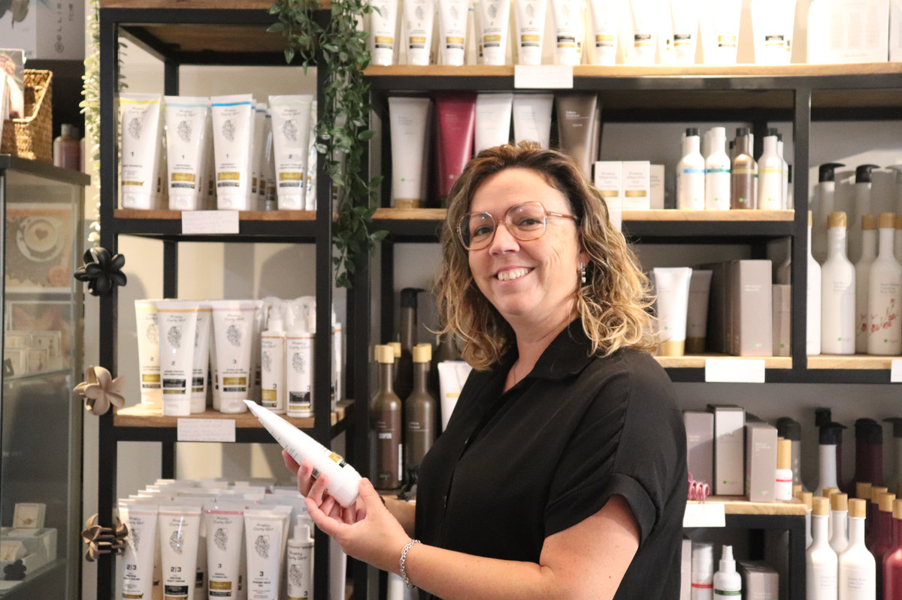
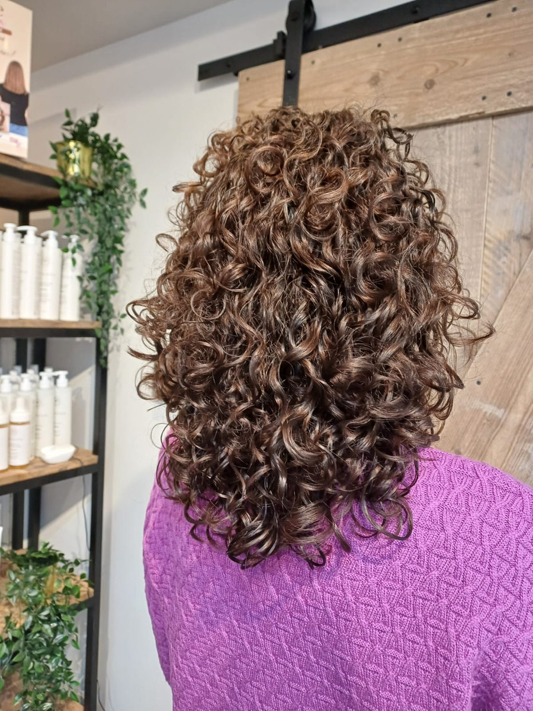
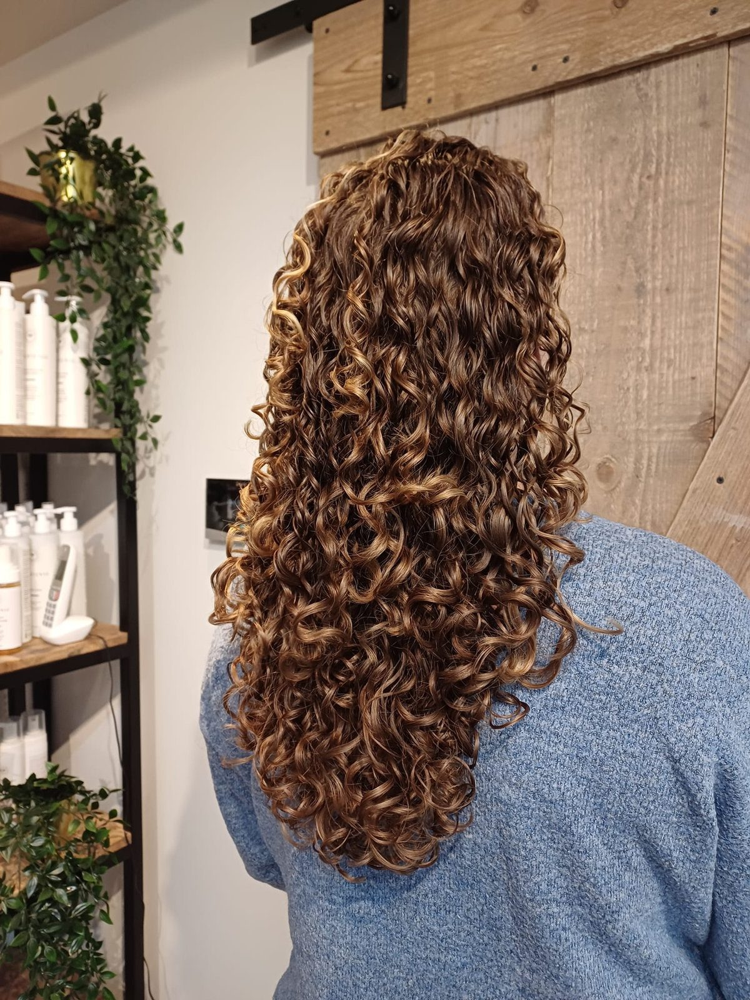
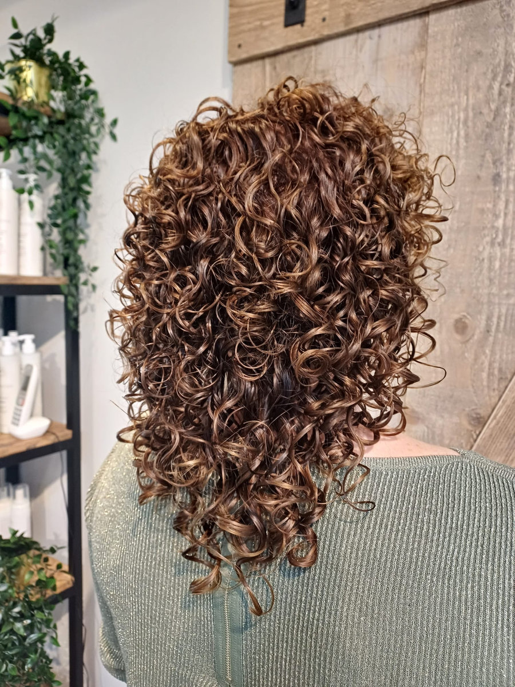

Krullen knippen
Curlsys, Controlled Chaos, de BC-methode of een snit voor type 4. We kiezen samen wat bij jouw krul past.
Adviesgesprek met drogen € 78Bianca en haar team knippen krullen krul per krul, zodat ze vallen zoals ze willen vallen. Voor dames, heren en kinderen, in Nijlen en sinds kort ook in Olen.
Krullen zijn onze specialiteit, maar ook met stijl haar, een kleur of een kort herenkapsel ben je hier aan het juiste adres.

Curlsys, Controlled Chaos, de BC-methode of een snit voor type 4. We kiezen samen wat bij jouw krul past.
Adviesgesprek met drogen € 78
Balayage, ombré en lokken op maat. Wil je zonder chemie kleuren, dan werken we met plantaardige kleuring.
Balayage met snit vanaf € 164
Last van jeuk, schilfers of haaruitval? We kijken eerst met een trichologiecamera. De headspa doen we in Olen.
Hoofdhuidbehandeling vanaf € 103
Voor haar dat droog, pluizig of beschadigd is. Je haar wordt weer soepel en makkelijker om mee te werken.
Keratine Gold vanaf € 300
Een klassieke snit, een fade of gewoon even met de tondeuse. Ook jongens met krullen zitten hier goed.
Herensnit € 27Alle prijzen en duurtijden zie je bij het online boeken.
Bekijk de volledige prijslijstEen krul knip je niet zoals stijl haar. We knippen per groepje krullen, zoals ze van nature vallen. Zo krijg je meer volume en veerkracht, en minder pluis.

€ 143Curlsys Original met krullen drogen
Boek een krullenbeurtEen paar klanten die met meer krul naar huis gingen dan ze binnenkwamen.



Bianca volgde in 2016 de Curlsys-opleiding en bleef bijleren: over hoofdhuid, allergie en eczeem. Wat ze weet, geeft ze door aan haar team en aan andere kappers in haar workshops.
Waterbesparende kranen, microvezelhanddoeken die aan de lucht drogen en je geknipte haar gaat naar Hairrecycle. Kleine dingen, maar we doen ze elke dag.
Na elke afspraak via Salonkee kan je een score geven. Dit zeggen klanten van Nijlen en Olen.
uit 939 geverifieerde reviews
We hebben heel duidelijke uitleg gekregen over hoe we krulhaar moesten verzorgen.
Nanou heeft mijn krullen geknipt. Heel duidelijke en gedetailleerde uitleg over welke producten ze waarom gebruikte.
Ik kan hier niks slecht over vertellen perfect ontvangen. Goede uitleg leuke babbel knappe resultaat.
Bianca weet de krullen van aanpakken. Vriendelijke ontvangst, lekker drankje, tijd voor vragen, natuurlijke producten.
Zelf je krullen leren drogen, een opgestoken kapsel voor een feest, of als kapper leren krullen knippen.
Een volle dag met technieken per krultype, productadvies en oefenen op een echte klant. Met certificaat.
Op aanvraagMet Bianca en Elina leer je je krullen opsteken. Kom met droog haar in je natuurlijke krul.
€ 50, drankje inbegrepenBreng je eigen diffuser en borstel mee. Wij zorgen voor handdoeken en producten, en kijken mee.
€ 75, drankje inbegrepenIn Nijlen tussen Lier en Herentals, en sinds dit jaar ook in Olen. We werken op afspraak.
Webshop-bestelling? Die haal je hier op tijdens de openingsuren.
In Olen doen we ook de headspa en huidverzorging.
Reken op een anderhalf uur. Dat is inclusief het gesprek vooraf, wassen, knippen en drogen. Een krul knippen vraagt gewoon meer tijd dan een gewone snit.
Een Curlsys Original met krullen drogen kost € 143. Twijfel je nog, dan kan je starten met een adviesgesprek waarin we je krullen ook drogen, voor € 78.
Boek je telefonisch of in de salon, dan vragen we € 40 voorschot. Online boeken gaat met je bankkaart als waarborg. Er wordt dan niets afgehouden.
Tot 24 uur op voorhand annuleer je gratis. Daarna bel je best naar de salon. Bij een late annulatie of als je niet komt, rekenen we een deel of het geheel van de beurt aan.
Bianca is een Haarvriendelijke Kapper en volgde opleidingen rond allergie en eczeem. Met plantaardige kleuring kan er vaak meer dan je denkt. Vraag het gerust bij je afspraak.
Ja, in de salon en in onze webshop, met onder andere Curly Secret, Bruns, Innersense en Ecru New York. Vanaf € 60 is de verzending in België gratis, of je haalt je bestelling op in de salon.
Online kies je zelf je salon, je kapper en je uur. Liever dat we je terugbellen? Laat je gegevens achter.
We bellen je om samen een moment te zoeken.
We bellen je zo snel mogelijk terug.
DIEen woordje uitleg van Stijn
Ik maakte deze demo voor jullie om te tonen wat er kan. Na een kort gesprek maak ik er iets veel persoonlijkers van, helemaal naar jullie wens.
Vrijblijvend. Ik kom langs of we bellen.
Op maat, op jullie eigen domein.
Geen voorschot. Jullie betalen pas als alles klaar is.
Hosting, domeinnaam en kleine wijzigingen, zoals nieuwe openingsuren.
Omdat een voorbeeld meer zegt dan een mail. Zo zien jullie meteen wat er kan, en het kost jullie niets.
Nee. Het gesprek is vrijblijvend. Vinden jullie het niks, dan is het daarmee gedaan.
Na ons gesprek staat jullie site binnen 10 tot 14 dagen online.
Zeker. Jullie domeinnaam kan gewoon blijven, de nieuwe site komt in de plaats van de oude.
Nee, dat doe ik op basis van ons gesprek. Eigen foto's zijn mooi meegenomen, maar niet nodig om te starten.